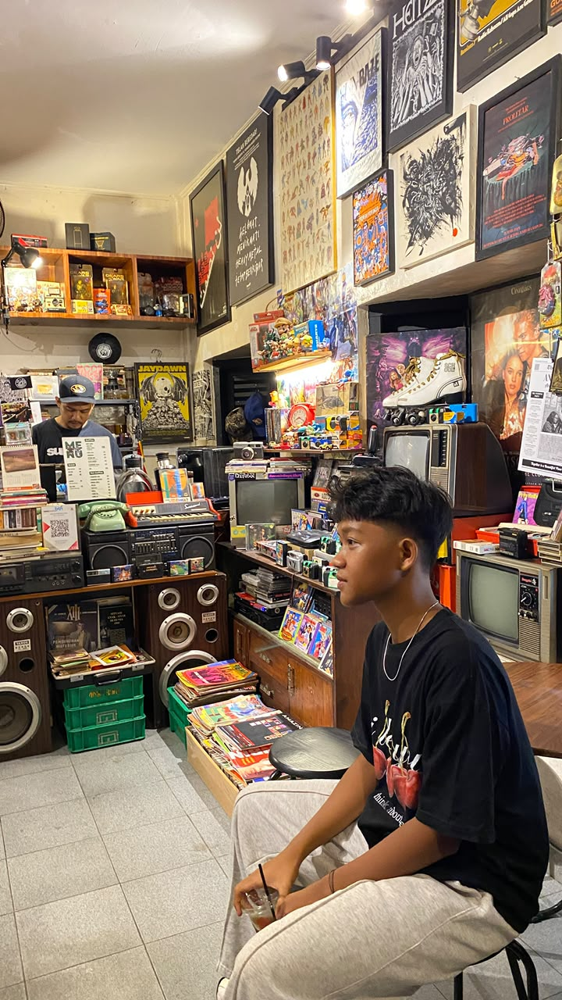

Juan Raffa Davidenco
Software Engineer Student
📞
0895-6098-31137
📧
juanraffa129@gmail.com
About Me
Siswa SMK Telkom Lampung dengan jurusan RPL yang memiliki minat pada pengembangan aplikasi dan teknologi informasi. Saya memahami dasar pemrograman web dan terbiasa menyelesaikan tugas proyek dengan disiplin serta tanggung jawab.
Technologies
Project
KantinGO
Dengan adanya fitur pemesanan makanan secara online, pembayaran cashless, serta laporan transaksi otomatis, KantinGO mampu membantu menciptakan proses pelayanan kantin yang lebih cepat, efisien, dan terorganisir.
View Project →